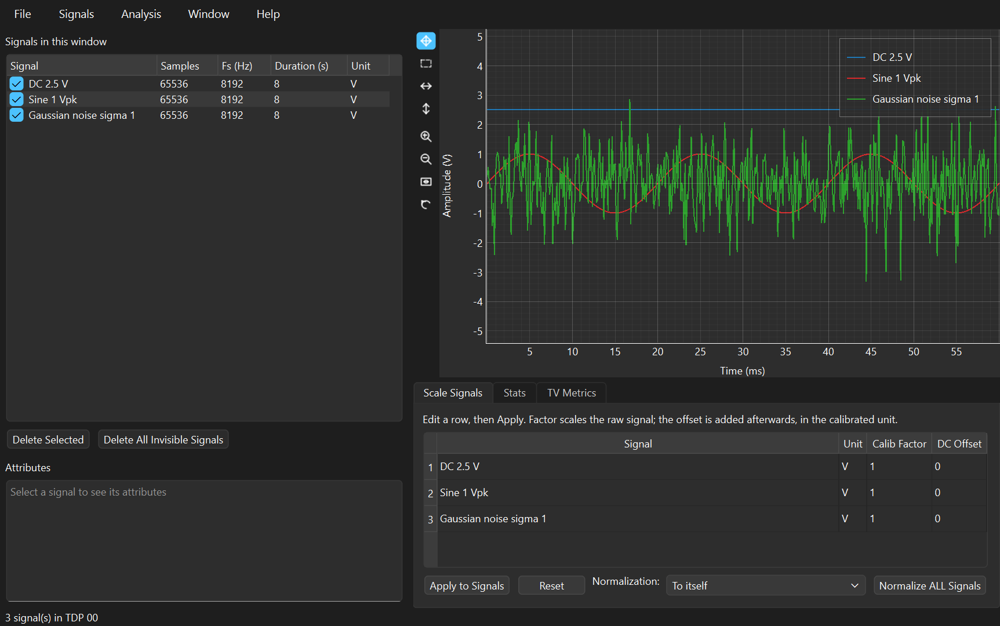
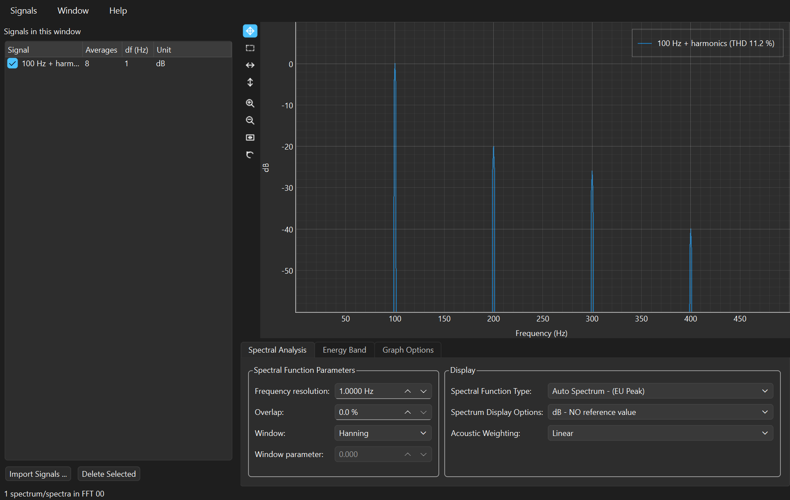
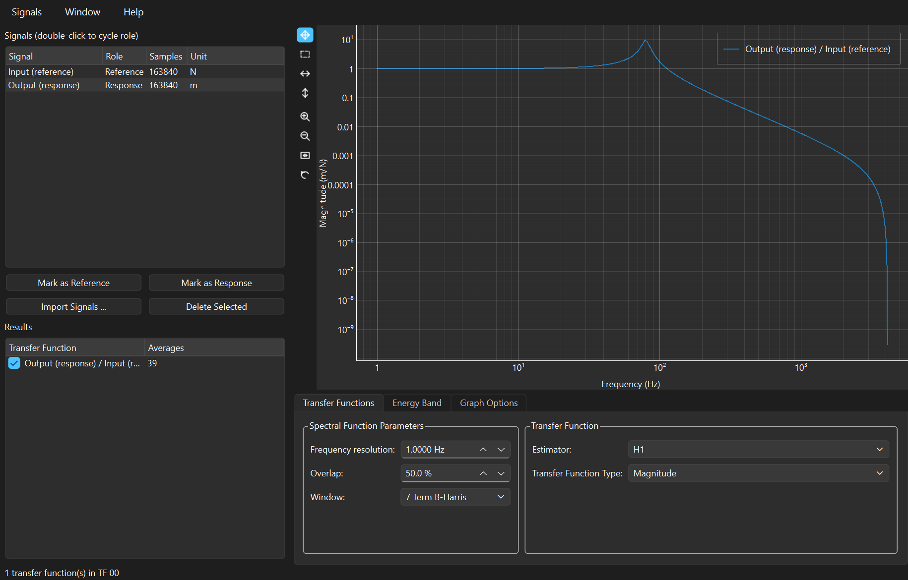
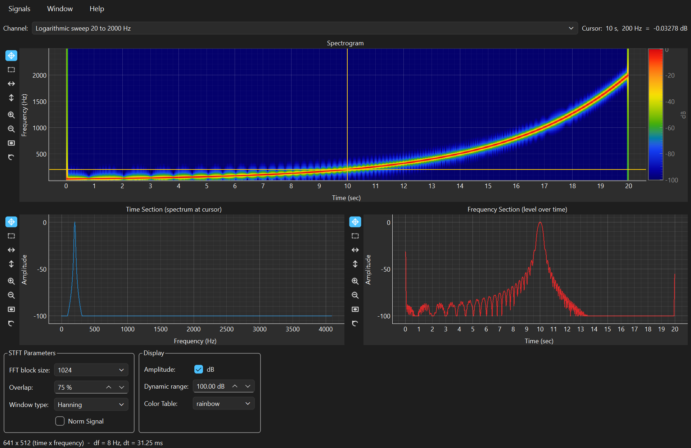
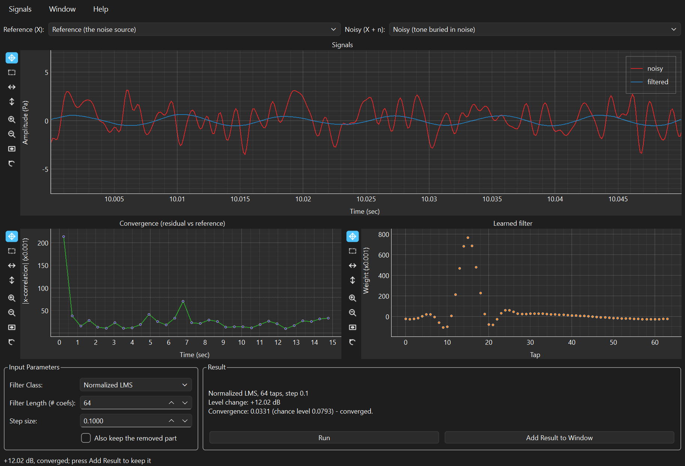

Spectra, transfer functions, coherence, spectrograms and adaptive filtering — in a desktop application you can simply download and run, and in a Python library you can call from a notebook. The same maths in both.
Version 1.1.0 · Windows, macOS and Linux · runs with or without Python installed · MIT licensed, no account, no telemetry

Anyone who has a recorded signal and a question about it — and who would rather not spend a five-figure licence, or an afternoon of setup, before getting an answer.
The frequency response of a structure, coherence between a hammer and an accelerometer, sound pressure level in dB against 20 µPa, a run-up caught in a spectrogram. The everyday work, without a per-seat licence.
Windowing, leakage, averaging and estimator choice stop being formulas when you can watch a flat-top window fix an amplitude a Hanning window got wrong. Free, and it runs on the laptop you already own.
Nothing to install and no licence server: hand out a folder, or a one-line pip command. Every analysis window has a manual that works through demonstration data the application generates itself.
The measurement work is the same whether or not there is a LabVIEW licence behind it. This removes that line from the quote entirely — and the results match what the licensed tool produced.
The whole processing layer is an importable library with no GUI attached. Work it out once by hand in the application, then run it over four hundred files from a notebook.
The LabVIEW SPWB reached end of life. This is where it went: the same multi-window signal sharing, the same numbers, now on macOS and Linux too.
Send the same signals to an FFT, a transfer function and a spectrogram at once, and they stay in step — the multi-window signal sharing SPWB has always been known for.
Load a measurement, look at it, and condition it: scale and calibrate, offset, resample, truncate, normalise. Statistics and time-varying metrics — RMS, crest factor, kurtosis, trends — sit beside the plot rather than in another tool.
It reads HDF5, TDMS, WAV and CSV, plus RPC-III, Nastran punch and HEAD acoustics files.
Averaged auto power spectra with the window, overlap and frequency resolution you choose. A-weighting and dB references for acoustics, band RMS and energy over a cursor range, harmonic markers.
A 1 V sine reads 1 V and a 94 dB calibrator reads 94 dB — the amplitude scaling follows the instrument convention, not whatever the FFT happened to return.

H1 and H2 estimators; magnitude, phase, real and imaginary, Nyquist. Coherence is plotted alongside, so you can see which parts of the response the measurement actually supports and which are noise dressed up as a resonance.

A colour spectrogram for anything that will not hold still: run-ups, sweeps, impacts, speech, transient events. Cursors cut a slice in time or in frequency, and the slice plots as an ordinary spectrum.

Give it the contaminated signal and a reference correlated with the contamination, and the LMS family — plain, normalised, and two noise-cancelling variants — adapts a filter that subtracts it. Convergence is plotted, so you can see whether it worked rather than hope.

The application and the library are the same code, and you can take whichever half suits you.
The program, the Python it runs on and every library it needs, in one folder. There is no prerequisite of any kind: no Python to install, no packages, no administrator rights, no installer.
For notebooks, for scripting, for Linux — and for anyone who would rather have the library than an application.
| Download and run | pip install | |
|---|---|---|
| Windows (64-bit) | Yes — SPWB-windows-x64.zip |
Yes |
| macOS (Apple Silicon) | Yes — SPWB-macos-apple-silicon.zip |
Yes |
| macOS (Intel) | Yes — SPWB-macos-intel.zip |
Yes |
| Linux | Not published — a bundle is tied to the glibc that built it | Yes, and it is the better route |
A signal processing tool is only worth having if you can quote what it prints.
pySPWB began as the Python port of the LabVIEW Signal Processing Work Bench, and its results are not a re-interpretation of the maths. They are pinned to reference data generated by driving LabVIEW 2022 itself, and that comparison runs automatically on every change — so a spectrum, transfer function or spectrogram you obtained with the original software still comes out the same here.
The application saves to plain HDF5, an open standard that MATLAB, Julia, R and HDFView read without pySPWB installed, so your measurements never become hostage to the tool that recorded them. And every downloadable build is checked on its own platform before it is published: it has to open all five analysis windows, write and re-read an HDF5 file, and return the right numbers for a spectrum and a transfer function, or it is never released.
A manual for every analysis window, each working through demonstration data the application creates for you from its own File menu — with a companion notebook that computes the same numbers in a few lines of Python.
The same analyses in Python, ready to run and adapt.
Free. No account, no ads, no telemetry, and nothing to install alongside it.
SPWB-windows-x64.zip, about 95 MB. Unzip the folder
and run SPWB.exe.
SPWB-macos-apple-silicon.zip, about 61 MB. Unzip and
open SPWB.app.
All three links open the same GitHub release page — scroll to
Assets and pick the file for your system. Keep the unzipped folder together: the
program needs the files beside it. On Linux, or in a notebook, use
pip install spwb[gui] instead.
The downloads are not code-signed. Windows will show a SmartScreen warning the
first time — choose More info, then Run anyway. macOS wants you to
right-click the app and choose Open once, or run
xattr -cr /path/to/SPWB.app. Signing certificates cost money every year; instead every
release carries a SPWB-checksums.txt, so you can verify exactly what you
downloaded.
pySPWB is free and open source. There is no licence to buy, no seat to renew, no account to make, and nothing about you is collected or sent anywhere. For measurement software that is unusual — and it is also why software like this is hard to sustain: there is no subscription to bill and no data to sell, so nothing pays for the work behind it.
Signal processing software takes real time to build and, more importantly, to keep alive. Operating systems change, Python and its scientific stack move underneath it, new file formats appear, and features get added because a user asked. A donation, however small, is what makes that continued attention possible — and it funds the next free tool as well as the upkeep of this one.
If pySPWB saved you a licence fee, an afternoon, or a measurement you would otherwise have had to repeat, please consider chipping in.
Secure payment through PayPal — no account required, any amount appreciated. Thank you for supporting independent, open source software.